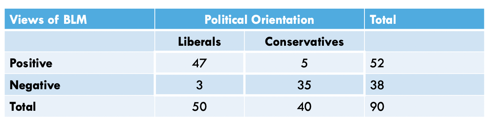
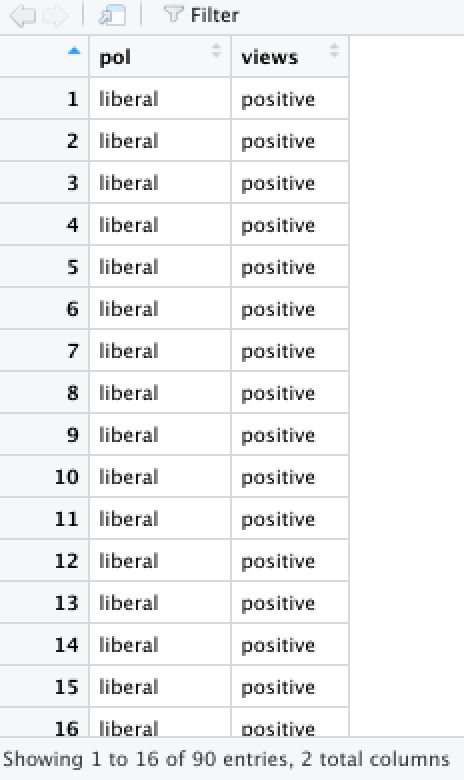

The Chi Square test (\(X^2\)) examines the association or relationship between two nominal/ordinal variables to see if the relationship reflects a true relationship that we could expect to find in the population. The test also tells us whether or not a category (attribute) of one variable varies by categories of another variable.
For this example, the Chi Square test works perfectly because we’re looking at categories of the political orientation variable (liberal and conservative) across categories of another (positive and negative views of the Black Lives Matter movement) to see if there is a true association between political orientation and views of BLM in the population.

In the table (above), we have a total of 90 people, randomly-sampled.
We see (by looking at the column marginals) that we have a total of 50
liberal individuals and 40 conservatives in the sample. By looking
closer at the cells, we see that, of the 50 liberals, 47 have positive
views of BLM while the other 3 have negative views of BLM. Moreover, of
the 40 conservatives, 5 have positive views of BLM while the other 35
have negative views of BLM. We can use this breakdown to create a data
set, using a combination of the concatenate, c(), data frame data.frame, and the repeat rep() functions.
The repeat function comes in handy when you have to type out the same
values over and over again. This function has two arguments: 1) the
thing you want to repeat, and 2) the number of times you want to repeat
it. For example, let’s say I wanted to create an object called x, that repeats the number 7, 10 times. I would do the
following:
and the data would look like this…
## [1] 7 7 7 7 7 7 7 7 7 7Next, let’s say I wanted to create an object called y, that repeats the string, word,
or, in more appropriate terms, group/category student, 25 times. I would do the
following:
and the data would look like this…
## [1] "student" "student" "student" "student" "student" "student" "student" "student"
## [9] "student" "student" "student" "student" "student" "student" "student" "student"
## [17] "student" "student" "student" "student" "student" "student" "student" "student"
## [25] "student"Using this logic, we can apply the repeat function to create each variable, concatenating across the various categories of each variable, and combine these variables into a data frame… as such…
pol <- c(
rep("liberal",50),
rep("conservative",40)
)
views <- c(
rep("positive",47),
rep("negative",3),
rep("positive",5),
rep("negative",35)
)For brevity, I don’t call the variables here, but instead, I’ll merge the variables into one data frame, using the following:
and the data should look like this, in your Environment window…

The assumptions for the Chi Square are…
Therefore, we meet the assumption of independence of observations.To check if you’ve met the assumption of normality (e.g. fewer than 20% of cells in the crosstab of expected frequencies falls below \(n=5\)), you use the following:
## $`Observed Frequencies`
## pol: conservative liberal Total
## views: negative 35 3 38
## positive 5 47 52
## Total 40 50 90
##
## $`Expected Frequencies`
## pol: conservative liberal Total
## views: negative 16.88889 21.11111 38
## positive 23.11111 28.88889 52
## Total 40.00000 50.00000 90Therefore, we meet the assumption of normality.The calculation for the Chi Square is:
\(X^2 = \sum \frac{(f_o - f_e)^2}{f_e}\) or \(X^2 = \sum \frac{(f_{o_i} - f_{e_i})^2}{f_{e_i}}\)
where…
In addition, the degrees of freedom (\(df\)) for the test is…
* \(df = (r-1)(c-1)\)
where…
For Chi Square, within the chi.sq function, the dependent
variable is listed first and the independent variable is listed
second.
#chisq.test(data$views, data$pol, correct=FALSE)
chi <- chi.sq(data, views, pol, post = T)
summary(chi)## Call:
## chi.sq(df = data, var1 = views, var2 = pol, post = T)
##
## Pearson's Chi-squared test:
##
## χ² Critical χ² df p-value
## 60.506 3.841 1 7.334e-15 ***
## ---
## Signif. codes: 0 '***' 0.001 '**' 0.01 '*' 0.05 '.' 0.1 ' ' 1
##
##
## Post-Hoc Test w/ Bonferroni Adjustment:
## Comparing: pol-views
##
## Standardized Residual (Z) p-value
## conservative-negative 7.7786 2.934e-14 ***
## conservative-positive -7.7786 2.934e-14 ***
## liberal-negative -7.7786 2.934e-14 ***
## liberal-positive 7.7786 2.934e-14 ***
## ---
## Signif. codes: 0 '***' 0.001 '**' 0.01 '*' 0.05 '.' 0.1 ' ' 1In the output above, we see the \(X^2\)-obtained value (60.506), the degrees of freedom (1), and the p-value (7.334e-15 = 7.334 x \(10^{-15}\) = .000000000000007334, which is much less than our set alpha level of .05).
To interpret the findings, we report the following information:
“Using the Chi Square test of independence (\(X^2\)), I reject/fail to reject the null hypothesis that there is no association between variable one and variable 2, in the population, \(X^2(?) = ?, p ? .05\)”